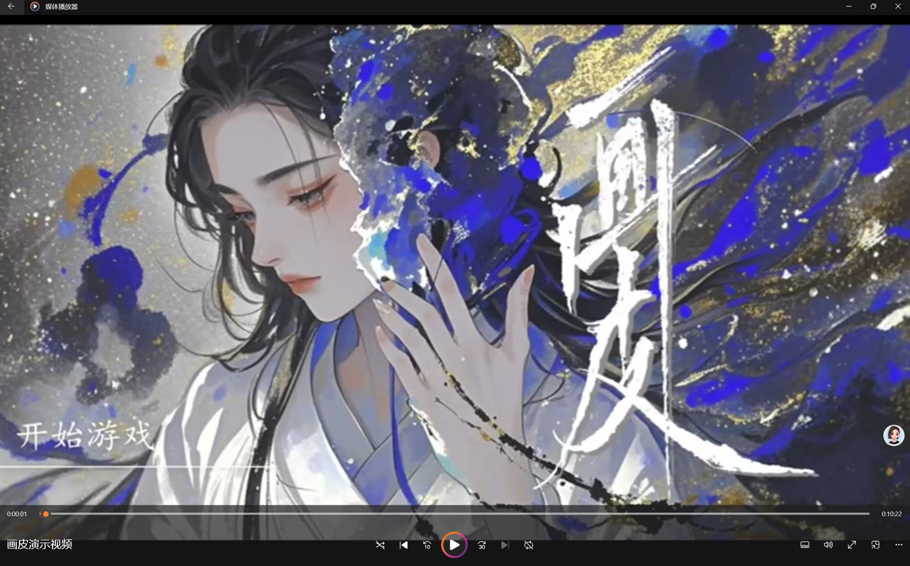
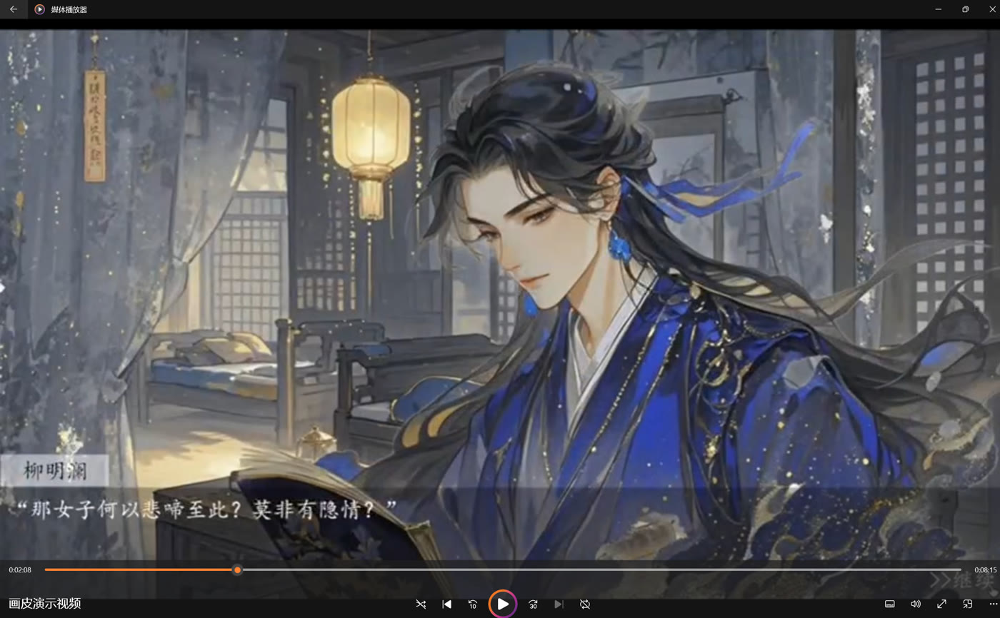
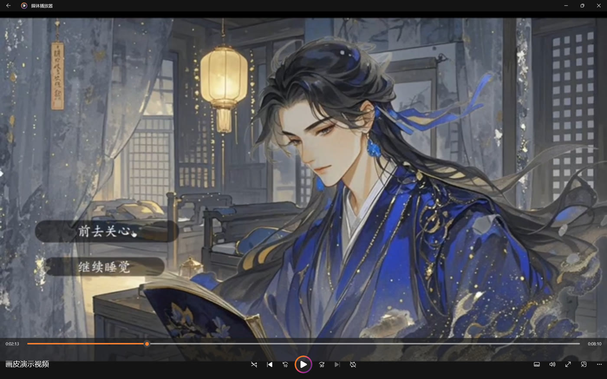

返回作品集

Web & Interactive · Category 05
网页与交互项目 Web · Game UI · Unity · Awards
本类别汇集了五个不同方向的网页与交互训练项目：从早期的画皮交互绘本（AIGC 产图+Figma 原型翻页），到二十八星宿国风展示网页（纯前端 HTML/CSS/JS 落地），再到校园快腿 H5 小程序与 Unity 参赛版本（国三 / 省二），以及情绪小窝轻量小游戏。每一项都承担着不同的训练目标——视觉叙事、前端工程化、跨端交付、游戏 UI 与独立美术工作流。
翻页绘本
HTML CSS JS
H5 小程序
Figma 原型
Unity
Game UI
AIGC 辅助产图
国三
省二
画皮 · 交互绘本Painted Skin · Interactive Picture Book

片段 01
AIGC 产图

片段 02
二次精修

片段 03
交互原型
二十八星宿 · 国风展示网页28 Constellations · Web
以二十八星宿为主题的国风展示网页，采用 HTML + CSS + JS 纯前端落地，视觉素材以 AIGC 辅助产图后二次精修。页面支持星宿点击交互、星图联动与响应式布局。
HTML CSS JS
AIGC 辅助产图
国风设计
前端落地
校园快腿 · H5 小程序Campus Courier · H5 Mini Program
面向校园场景的跑腿与代取件小程序，产品原型与交付由我独立完成，视频展示为 H5 版本的核心流程。
贡献 & 交付
- 独立完成产品原型、交互流程与视觉规范
- 输出高保真 Figma 原型，包含 20+ 页面状态
- 与开发对接交付设计稿与标注文件
H5 小程序
Figma 原型
Game UI
关联证书 →
情绪小窝 · 轻小游戏Mood Nest · Light Game

玩法 & 贡献
- 目标：一款治愈系情绪陪伴小游戏，玩家通过互动与小窝中的角色互动，逐步解锁情绪日记
- 界面结构：主场景 + 情绪面板 + 日记本三个核心模块
- 负责内容：UI 设计、图标绘制、交互逻辑与独立开发
- 独立完成：从概念美术到前端实现全流程 solo
Unity
Game UI
独立完成
Figma 原型
校园快腿 · Unity 参赛项目Campus Courier · National Award
赛事全称：全国大学生数字媒体科技作品及创意竞赛 · 校园快腿 Unity 版本为参赛作品主体，获国家级三等奖与省级二等奖。
Demo · 演示视频
负责内容
- 美术：角色立绘、场景插画、UI 图标全部自绘
- 交互：主菜单、订单流程、结算页面的交互规范与原型
- 交付：参赛文档、演示视频剪辑与答辩 PPT 美术
- 工作方法：统一色板 + Grid Layout 系统，保证多页面视觉一致性
Unity
Game UI
AIGC 辅助产图
Related Certificates
关联证书